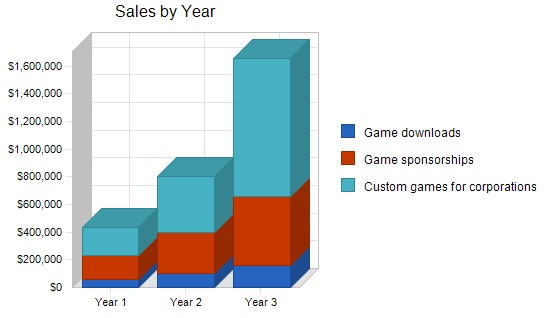
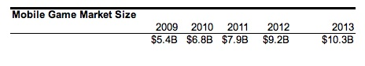
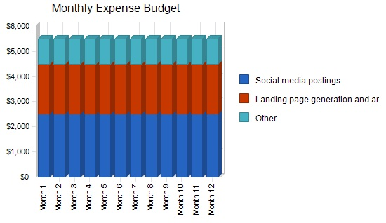
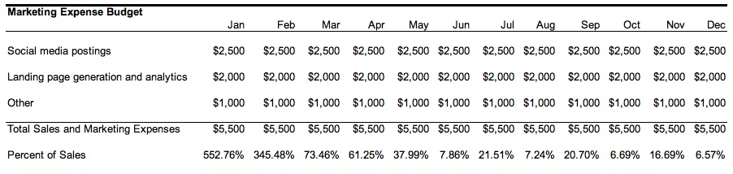
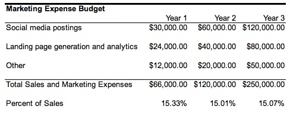
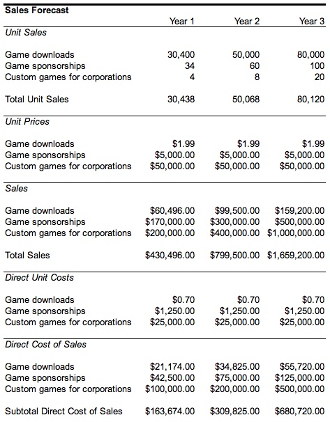
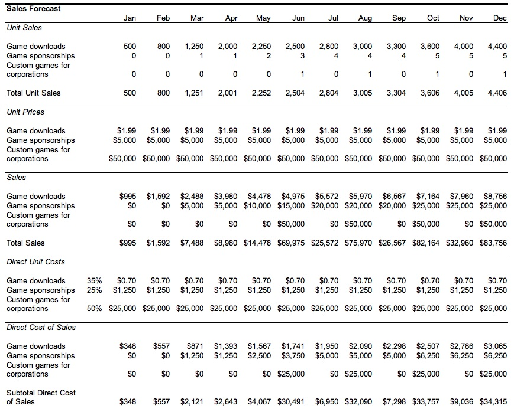
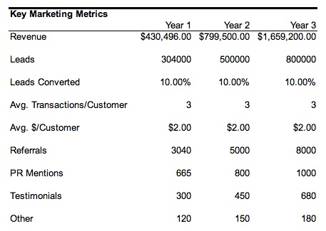
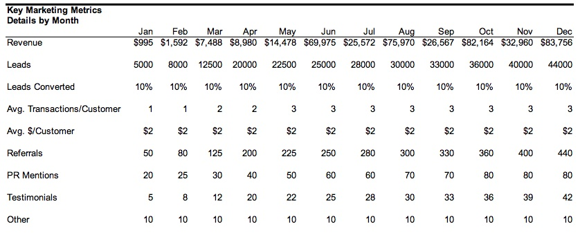

Call Our Startup Hotline: 1-888-391-7095
RSS Feed

Sample Marketing Plan
1.0 Executive Summary
Mobile News Games LLC (MNG) develops mobile games relating to current news events. This marketing plan illustrates our market segments and the strategies we are employing to get customers and create a solid revenue stream. We are not just any mobile game developer. Our unique focus of creating games with a news twist gives us an advantage over our competitors by giving customers a new outlet to enjoy mobile games. This fills a read need of not just traditional gamers but expands our reach to people who would normally not play mobile games yet are amused by the comical angle we use.
We will fund development of our own games by providing consulting services to create similar games for corporations who are looking to create mobile games for promotional purposes. These consulting assignments will come from advertising sponsorship relationships that we will establish with companies who are interested in embedding their brand and offers inside our other games and would also like something more custom that they can offer as their own game. In the first 3 years of the business, we expect consulting to constitute a large portion of our revenue stream.
1.1 Vision
Our vision is to provide people with a brief escape of fun over the course of their normal day. We do this by providing them with timely interactive games that they can access on their mobile devices - games that are easy to play and have some connection with current pop culture news.
MNG leverages our team's software development experience to create timely games quickly. Our marketing challenge is to attract visibility quickly and we intend to accomplish this by leveraging a multi-pronged approach that involves social media, email marketing and search engine optimization strategies to gain market share. As we gain traction in the marketplace, word of mouth will lift our game downloads significantly.
1.2 Objectives
- Generate over $400,000 in sales by the end of year 1.
- Increase sales by 100% by the end of year 2.
- Land 4 custom consulting game development projects within 12 months.
2.0 Target Markets
Our ideal customer is between the ages of 13 and 25 who enjoys playing video games and has a mobile phone that allows applications to be downloaded, such as the iPhone, Android or Blackberry. They often have an Xbox, Wii, Playstation or other TV-based video game unit at home. They may also have a portable gaming unit such as the DS/DSi and other portable gadgets such as an iPod.
Customers are typically single and male and own or have access to a home computer, PC or Mac. They have a wide range of disposable income. Some are teenagers living at home, others are college students or those who have joined the workforce in the last 5 years.
Our game design consulting customer is the VP of marketing or equivalent position of a medium to large organization who is looking for creative promotional methods for their products and services.

2.1 Market Definition and Segmentation
We target two segments: mobile game users and organizations that want to reach them. In both of these segments, customers are computer and mobile phone savvy and enjoy creative experiences.
1. Mobile Game Users
There are two types of customers that define the demographic of mobile gamers: teens (including pre-teens) and young adults, which for the purposes of this marketing plan will include teenagers age 18 and above as they are considered young adults by the general population as well as by the law. The primary difference between the two demographic segments is who provides the money for game purchases.
Free mobile games:
- We offer trimmed back versions of our games for free so that users can get a taste of the full game without committing any money up front.>
- Some features of free versions are disabled and advertising is displayed in some strategic locations within the game so that users are not bothered or distracted by the ads. For example, a soda company may pay for a sponsorship and we might embed their name as a clickable (tappable) billboard that appears as if it is part of the game itself.
Paid mobile games:
- Our paid mobile games contain a broader set of features. The price range is between $1.99 and $4.99 in order to create very low price resistance for customers.
- Paid games are also monetized via clickable (tappable) ad sponsorships embedded within the games.
Games are available via instant download on their appropriate mobile platform (i.e., Apple's Appstore for the iPhone).
2. Organizations That Want to Reach Youth and Young Adults
Additionally, there is typically one type of customer who purchases custom mobile game development services: VP of Marketing or Chief Marketing Officer. Their intent is to promote their brand and products to the demographic that overlaps with mobile game users.
2.2 Target Market Segment Strategy
Our strategy focuses on developing an initial set of libraries containing game attributes that can be combined to create new games. Upon launching the first set of games, we will stay in regular contact with our customers via numerous online methods, including social media and email marketing. After creating these libraries and games, we will be able to market fast-turnaround consulting services to organizations who would like their own promotional games.
2.3 Target Market: Mobile Game Users
Our mobile games have a timely connection to current news events. We release new games within two weeks of major news stories. For example, if a politician is involved in a scandal, we can leverage one of our current game architectures and customize it with the names of people involved in the scandal and even make a comical interactive spoof out of events. If a celebrity makes a foolish comment, we access our library of features to put together a game that pokes fun at the celebrity. The mobile game user market enjoys interacting with games that give them a sense of power and excitement, allowing them in some way to live vicariously through the game.
2.3.1 Needs and Requirements
Mobile game users get tired of games quickly and are constantly looking for new games to play. With the plethora of news events always in circulation, we will target the news media so they discuss games related to the stories they are covering. The games we develop will target stories that are covered by the types of media outlets this demographic consumes.
The users in this segment also has limited financial capacity. Teens typically get their money to make game purchases from their parents, which can be in the form of gifts or allowances, or from low paying jobs. Older teens and young adults also have limited financial capacity yet choose to spend part of their disposable income on games as one of their sources of entertainment.
Very frequently, these customers talk to each other about which games they enjoy, including strategies for playing and winning. They also participate in online forums and discussion groups to gather tips and other information to help them play or to find new challenges. Additionally, they enjoy being listed as the "high score" when there is a public setting available for players. We intend to offer this public setting by allowing the customer to upload their score to our web site for each game. The highest scores will be posted, giving the player worldwide "bragging rights". As a result, the word of mouth potential for timely games is explosive.
2.3.2 Distribution Channels
iPhone games are distributed through the Appstore which is currently controlled by Apple. One of the obstacles we have to overcome is the speed with which Apple approves applications for downloading, which will be important for us since our games have a time sensitive nature to them as they will be popular as long as a news story is in circulation.
Google's Android offers an open source model so they will likely surpass the iPhone in the number of applications available soon. This also eliminates the need for review and allows us to post new applications quickly. As more applications come out for this device, it will gain marketshare. We want to be positioned so that we provide excellent games for this community.
Blackberry applications are controlled by Blackberry through Blackberry App World. Their users tend to be older and more focused on business uses for their mobile devices. Because of this, we will not focus our initial efforts on Blackberry. However, we do have the expertise to build Blackberry applications and will create custom games for this device for consulting clients who would like them.
2.3.3 Competitive Forces
There are many mobile game developers. However, few are actual companies. Most games are developed by one person who does not have the marketing savvy to integrate advertising sponsorships into their games as we have outlined in this marketing plan. Our unique twist on the types of games is also an advantage because we will not have to spend as much time and energy thinking of the game themes - the news of the day will provide that fodder so our efforts can be concentrated on developing that real-life story into a game.
2.3.4 Communications
We will leverage social media and word of mouth for the vast majority of our marketing using platforms such as Twitter, Facebook, Orkut and MySpace. These platforms are widely used by the customers in our demographic market. We will make announcements via regular tweets and updates to our fan page on Facebook.
The newsworthy component of our mobile games also makes it enticing for traditional media to publicize a game that is related to a current news story.
We will also use our email marketing list which is comprised of people who have expressed interest in knowing when we release new games. We have segmented our email list so that we can send appropriate emails to media and different ones to actual gamers, our customers.
2.3.5 Keys to Success
Each of our postings to social media sites will include a trackable link so we know how many people click on each post. Using online tools like link redirectors (i.e., bit.ly, tr.im and others), we can also see how many of readers and followers repost or forward such links. We will also include trackable links within our email marketing messages.
Those who click to find more information about a game will be directed to landing pages, which are web pages that contain more information about a specific game, including details and links to download the games. These landing pages will be optimized for search engines (we have SEO, search engine optimization, expertise) so that when Internet users search on various keywords, our pages will rank highly in their search results.
Using online analytics tools, we will be able to see how many people click on various links in our media campaigns to go to the landing pages and how many click to download each game. However, online clicks cannot track users who use their mobile phone to download the apps directly, which may comprise the bulk of our downloads. For those, tracking of downloads is provided by the platform such as Appstore.
2.4 Target Market: Organizations Who Want to Reach Youth and Young Adults
Mobile game users consist of young people. Since the youth and young adult demographic is so large, it is also very lucrative. There are countless products targeting this demographic, from soda manufacturers to clothing designers to hair product companies. This segment can also consist of recruiters, which can be for military service or other jobs. Companies who already spend millions of dollars on marketing to this group are regularly looking for newer, more creative ways to reach this market to reinforce their brand and sell products.
2.4.1 Needs and Requirements
Organizations who want to reach males (and females, though it is a smaller proportion of our defined customer base) between 13 and 25 realize that this group has a lot of spending power. This age group is not yet used to saving money so they typically spend a lot of what they earn. Vice Presidents and Chief Marketing Officers of these organizations want to reach this market early and need to do so in catchy, creative ways.
Much to the dismay of an older generation, teens and young adults are reading less and spending more time in front of a screen, whether it be television, a computer or a mobile phone with a variety of applications. The VP or CMO needs to reach their target market where they hang out. They typically have large budgets to spend on marketing and are not afraid to try new things, as long as they show results.
The typical tenure of a VP or CMO is about 3 years so there is a good deal of industry churn. This is a good thing for us in the sense that when a senior executive like this leaves to go to another company and they have had a good experience with our products and services, they are likely to hire us to create similar results for them in their new position.
Our job is to make them look good to their superiors by getting them more entrenched with the demographic they are trying to reach.
2.4.2 Distribution Channels
Reaching senior marketing executives is typically done through a variety of means. Since we have limited resources and need to manage our finances very effectively, we will focus on two: advertising and networking. The advertising will primarily be online via search engine ads so we can see the results within days instead of not knowing whether a print ad has any effect. We have identified 4 trade shows and 3 conferences that these executives typically attend over the course of a year. Part of our marketing plan is to attend these events to network with these potential buyers. We also will submit responses to calls for papers to be speakers at some of the events when possible.
2.4.3 Competitive Forces
As with the mobile game user segment, there are a lot of software developers targeting organizations to build custom games. Some are developing games overseas at lower costs. Even some of the larger domestic companies outsource portions of their game development. In order to keep up with pricing pressures, we have established ties with two overseas organizations to help us with game development. That will enable our domestic staff to focus on marketing and on project management as we release new games and create the game component libraries.
2.4.4 Communications
To get these high level executives, we will develop an online ad campaign with landing pages containing lead generation forms that visitors can fill out to get whitepapers on using mobile gaming to attract customers. Our white papers will include the concept of embedding advertising within the games as well as examples of custom games created just for a specific organization.
We also will network at major trade shows and conferences, including obtaining speaking engagements where we can discuss case studies to expose our concepts and strategies to the right level of buyer.
2.4.5 Keys to Success
The primary key to success is to be able to show case studies in which other companies leveraged the power of mobile games to reach their market. This can be tracked using metrics such as the number of times a gamer clicked on an ad embedded into a game, the number of times a custom game was downloaded or an increase in sales of the product being promoted. Success can also be tracked by industry buzz.
For example, fast food chain Burger King created a Facebook application that allowed users to earn points for "unfriending" one of their friends. The application would show the image of the friend burning. Upon burning 10 friends, the user would be entitled to a free burger. Word of this application spread very quickly and quite a few Facebook users enjoyed participating. This campaign did two things: generated traffic into restaurants and generated a tremendous amount of media buzz. It cost significantly less than a paid advertising campaign involving television time purchases.
3.0 Marketing Plan Strategy
Gamers like to share notes with other gamers. On our web site, we will create a forum where people can post and respond to comments freely as well as offer suggestions for new games.
Forums will require registration and users who post more frequently will be rewarded with a special tag, a gold star, next to their avatar to show other users that they are a "super contributor" to the forums. For our demographic, this is a badge of honor that they try to attain proudly.
3.1 Emphasize Creativity, Service and Speed to Market
Since our games will be tied to current news events, we will emphasize our focus on creativity along with spectacular service and speed of development for our consulting clients. It is important for us to get to market quickly in order to capitalize on the news event that is associated with the game. The longer the delay between game conception and game release, the less the penetration of that game.
3.2 Emphasize Fun
Our goal is to establish a reputation for games that poke fun at what many would consider humerous or ridiculous actions by well-known people. Each game will contain a link to our web site where users can find out about more games and subscribe to our email list and follow us on Twitter and Facebook.
Additionally, to help promote games via word of mouth, each game has the option to notify a friend. So, a user can send a text message to a friend instantly to share their excitement or recommendation about the game.
4.0 Expense Budget Summary
Marketing expenses are mostly for staff required to do the marketing activities listed. The vast majority of the software tools needed to implement the activities, such as analytics and landing page creation, are available for free. The exceptions to this are for specific tools like email marketing and forums.
4.1 Expense Budget by Month - Year 1
We do not expect an increase in marketing staff requirements during year 1 because one person can actually do a lot of these activities. Once they have put marketing plan processes into place, the marketing activities upkeep becomes easier and can be handled by junior staff. Below is a breakdown of marketing expenses by month for year 1.

4.2 Expense Budget by Year
We anticipate second and third year marketing expenses to increase, again mostly for covering the cost of additional staff to help facilitate the additional requirements for marketing activities. We expect sales and marketing expenses to be around 15% of total sales.

Table: Marketing Expense Budget
5.0 Sales Forecast
Sales will come from three sources:
- Game downloads - this includes free and paid downloads. The free downloads are monetized from embedded advertising sponsorships
- Embedded Advertising Sponsorships - ads embedded in both free and paid games
- Custom games developed for companies - this would be consulting projects to develop iPhone, Blackberry and Android promotional games
Sales costs relate to the fees charged by our channel partners for carrying the games, such as Appstore, or for our estimated costs for staff to sell ad sponsorships or develop custom games.

5.1 Sales Forecast by Month - Year 1
Below is our first year's sales forecast broken down by product type, estimated unit pricing and costs:
6.0 Progress Measurement and Monitoring
In order to make sure that we are on track, we have created a variety of key metrics that we will measure on a regular basis. These may require adjustments and fine tuning as we progress. They are our best estimates based on currently available market research.
6.1 Key Marketing Metrics
We estimate that 1 of every 10 people who visit the landing page or see a tweet or Facebook post will download a game. Other metrics include the average sale price estimated based on paid downloads as well as sales of advertising sponsorships and custom game development.
Table: Key Marketing Metrics
Below is a breakdown of key marketing metrics measured by month for year 1:
6.2 Other Success Metrics
Other key metrics we will measure to monitor our success are as follows:
- Number of speaking engagements
- Five star game reviews
- Industry awards
- Number of games developed
- Number of game feature libraries created
- Number of deals with channel partners
- Email list size
We will also pay attention to the number of tweets we make and the number of followers on Twitter as well as the number of Facebook fans we get. Below is a breakdown of other success metrics by month for year 1:

7.0 Marketing Organization
Mobile News Games is a small company with very focused aspirations. Our team is comprised of two unique individuals who have a solid background in mobile communications and marketing. Together with a team of local and international software development staff, we are able to bring to market a wide array of unique mobile games that provide an experience that other gaming companies do not.
Bill Philips, President, oversees the general management, including game development, of MNG. Prior to forming the company, he was Vice President of Products at a major wireless telecommunications provider for 5 years. He is also a member of the Mobile Marketing Association.
Donna Paster, VP Marketing, is responsible for all areas of marketing. She co-founded MNG with Bill Philips. Donna's prior experience includes developing the key marketing plan that launched several mobile versions of games for a large video game producer. Donna will be assisted by 2 marketing interns hired from local universities as co-op students throughout the year. These students will handle the more routine aspects of the marketing efforts while Donna focuses on the key strategic relationships.